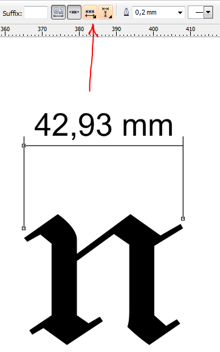
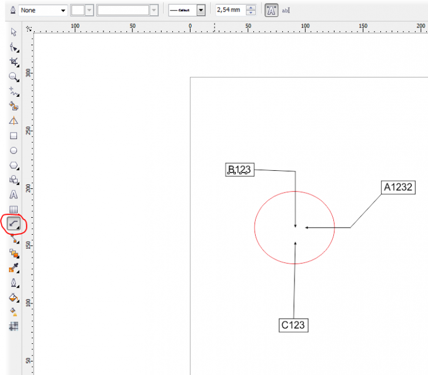
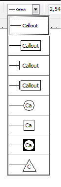

Выноска....
Tu / 24.06.2010, 20:17/00:41
Форум:
Здравствуйте, можно ли настроить выноску в Х5, что бы текст был над выноской а не с боку?
Спасибо
Здравствуйте, можно ли настроить выноску в Х5, что бы текст был над выноской а не с боку?
Спасибо
Задавайте вопросы точнее, если это касается dimension tool, то настройки здесь!

спасибо большое, что ответили и за оперативность, но меня как раз выноска интересует а не размер
Tu, поэтому я и говорю что подробней описывайте проблему!
опять же я должен интуитивно догадываться что тебе нужно!, одно слово "выноска" не очем не говорит!
выноска зависит от направления кривой в callout tool:

Ну видать конструктору и дизайнеру друг друга не понять....для меня выноска все говорит....как сделать что бы выноска рисовалась вот так...?
Tu, В кореле только такие выноски (callout):

Ок, понял, я просто фотоматериалы оформляю в кореле, устал постоянно выноску и текст отдельно редактировать, думал может я не разобрался, вроде все варианты выносок есть , а вот нужного мне, что бы текст над линей нет.
Спасибо, что ответили.
Подскажите, пожалуйста, можно ли как-то при нажатии одной кнопки выставлять автоматом размеры по горизонтали и вертикали?
Для этого есть инструмент - "Размер" :)
Я понимаю, что есть такой инструмент. Можно ли как-то выбрать объект и автоматом выставить высоту и ширину, а не клацать на одной точке, потом на другой?
По-моему, когда-то такой макрос был. То надо у знатоков поспрашивать. А в стандартных инструментах самого Корела, такой возможности, насколько я знаю нет.